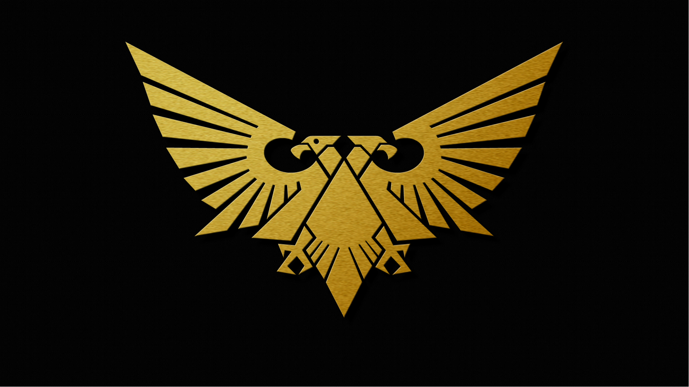

The Imperium of Man
The Imperium of Man is the largest and most powerful empire in the galaxy, ruled by the God-Emperor of Mankind. Its armies include the Space marines, Imperial Guard, and the Adeptus Mechanicus.
Learn MoreThe Warhammer 40k universe is home to numerous of factions, each with their own unique History, Cultures, and Armies. Whether you're fighting for the Imperium, Chaos, or an Alien species, there's a faction for everyone. Explore below to learn more about each major factions.
The Imperium of Man is the largest and most powerful empire in the galaxy, ruled by the God-Emperor of Mankind. Its armies include the Space marines, Imperial Guard, and the Adeptus Mechanicus.
Learn MoreThe Chaos Gods and their Daemonic armies wage an endless war against the Imperium and all life in the galaxy. Their champions include the Chaos Space Marines and countless demons.
Learn MoreThe Orks are a brutal, war-loving species that lives for battle. Their strength lies in their numbers, ferocity, and their ability to cobble together deadly war machines.
Learn MoreThe Tyranids are a ravenous swarm of alien creatures that devour entire planets, seeking to consume all life in the galaxy.
Learn MoreThe Adeptus Astartes, also known as the Space Marines, are humanity's greatest warriors. Genetically enhanced and armed with the best weapons and armor, they stand as the ultimate defense against the galaxy's countless threats.
Each Chapter of the Space Marines has its own unique history and traditions, from the Blood Angels to the Ultra marines, their battlefield tactics are as varied as the enemies they face.
Learn more about the Adeptus Astartes